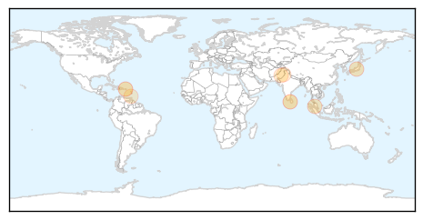
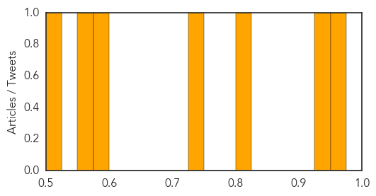
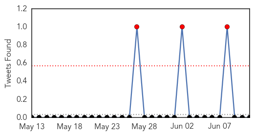
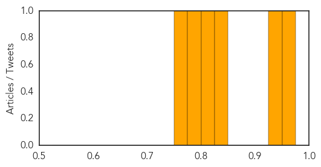

Dengue Fever
30-Day Web Trend
1 alerts, 1 warnings

30-Day Twitter Trend
0 alerts, 0 warnings

Article Locations
Article Confidences
Top Articles:
- 0.961
- The Island
- 0.939
- A germ stopper for blood products
- 0.805
- National Virology Institute in Alappuzha Gets Centre's Nod
- 0.739
- Ignorant residents, foreigners contribute to rise in dengue cases
- 0.588
- Project Premonition brings researchers together to detect diseases before they become an outbreak
- 0.556
- Dengue completely under control in Punjab
- 0.512
- Gulab Devi to share cardiac burden
Top Tweets:
-
No tweets found for Jun 11, 2015
Cholera
30-Day Web Trend
5 alerts, 0 warnings

30-Day Twitter Trend
0 alerts, 0 warnings

Article Locations

Article Confidences
Top Articles:
- 0.953
- Cholera claims 500 in 5 months in Nigeria
- 0.935
- Cholera claims 500 in five months in Nigeria -UNICEF
- 0.848
- Unbound Enlists Moms In The Battle Against Cholera Outbreak In Kenya
- 0.812
- Nigeria: Epidemic (Cholera) Emergency Plan of Action operation update n° 1 (MDRNG020) - Nigeria
- 0.793
- Protecting refugees and host families from cholera - Democratic Republic of the Congo
- 0.763
- Cholera case confirmed in Adabraka following flood disaster
Top Tweets:
-
No tweets found for Jun 11, 2015